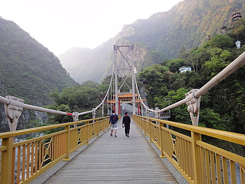
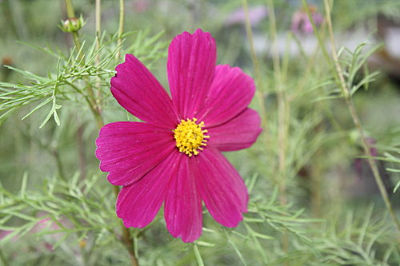
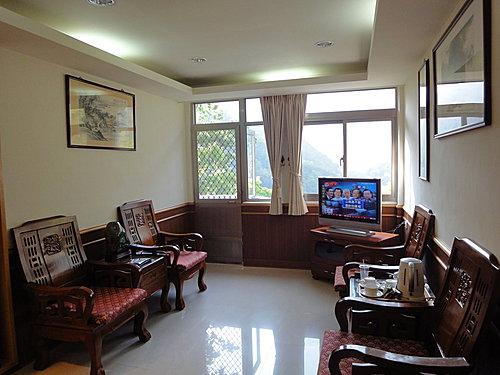
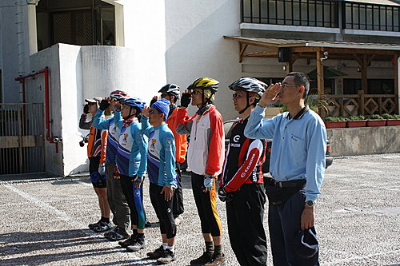
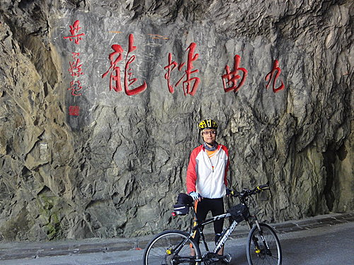
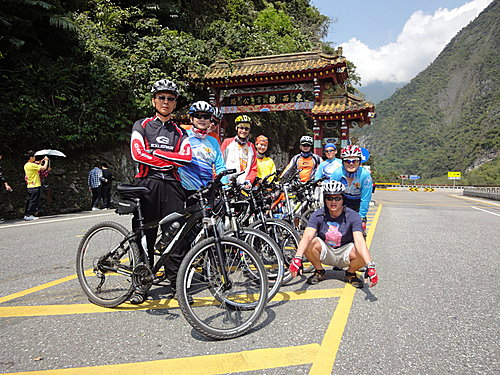

今日行程概要：
天祥（450M ）-九曲洞-燕子口-長春祠-太魯閣牌樓( 30M )-
沙卡噹步道(共約22公里)-達基力餐廳午餐-蘇花公路返家
*****
宿於太魯閣峽谷河階台地的天祥青年活動中心，
一夜好眠。
為了不辜負這般的好山好水，
Lily約大家一早六點一起去祥德寺走走。

天祥距太魯閣約19公里 ，海拔450公尺 ，
昔為太魯閣族塔比多（Tabido）部落所在，
中橫公路開闢時，
為紀念民族英雄文天祥而改名至今。
天祥是內外太魯閣的分界點，
以東屬內太魯閣峽，
河床坡度緩，
一千公尺以上峭壁聳立對峙，
形勢雄偉獨特，
是典型U字型峽谷；

以西屬外太魯閣峽，
河床坡度雖陡，
但溪谷開闊呈V字型，
兩岸無峭壁聳立雲際之景觀，
卻有另一番遠山含笑的風光。
登上祥德寺上的天峰塔第七層頂端，
可俯瞰整個天祥全景，視野極佳，
照片由近至遠，依序為立霧溪、晶英酒店、
天祥遊客中心及救國團青年活動中心。

@於立霧溪旁之餐廳享用早膳，
窗外峭壁聳立，水聲潺潺，氣氛超優。
活動中心卓總幹事熱情的
為我們導覽天祥的人文及地理景觀，
並引領大家參觀中心設施及「福祥」套房，
該套房可謂是青年活動中心的總統套房，
據 聞經國 先生每次造訪天祥，
皆下塌於該套房，
目前該房已開放給民眾訂房，
訂價一夜4800元，
價格可是與隔壁晶英酒店同級哦。
我們車隊住宿此地的感想，
真是頗為驚艷，
全新整修後的客房，
猶如置身五星級飯店，
住宿其中悠雅舒適，
2人套房含早晚餐的鐵馬專案，
每房只要2300元，
真是物超所值，
值得向車友大力推薦。

記得河東獅車隊剛成立時，
超哥、豪哥及我每次騎鐵馬上柴山時，
悠閒的騎乘加上踩踏的奔馳，
總是有回到高中時代青春年華的感覺，
而這次騎車遊天祥，
則又多了高中時代重要的一味--
即穿著制服參加晨間升旗典禮。
20年後--物換星移--不同的只是，
這次制服是穿上河東獅隊美麗的車衣，
升旗場地則是位於壯麗的太魯閣峽谷河階台地之上。

@車隊與卓總幹事於升旗廣場合影後，迎著陽光向前行。
太魯閣峽谷風景最棒的賞景路段，
非「九曲洞步道」莫屬。
車隊一到步道路口，
大家忍不住仰道讚嘆大自然的雄偉壯觀。
回首當時步道的開鑿應是倍其辛勞，
或許正因此才會處處留下巧奪天工的景緻，
讓人不禁猛殺底片想要留下優美的倩影。



@騎著鐵馬滑行於壯麗的峽谷之中，
超棒的景觀視覺享受，
加上清風拂面的舒暢快感，
沒有身歷其境，筆墨還真難以形容。
@長春祠
人言爬山是「上山容易，下山難」，
然騎自行車則正好相反，
可謂是「下山容易，上山難」，
從天祥至太魯閣牌樓約20公里 的路段，
係從海拔450公尺 降至海拔約30公尺 ，
若非多處駐足留影，
鐵馬之旅應只需1小時即可完成，
所以車隊約於10點半即到達中橫出口牌樓處。
由於最後一日係悠遊於壯麗的峽谷之中，
風景優美又屬下坡路段，
大家在輕鬆愉悅的心情下，
為中橫四天單車之旅劃下完美的句點。

(待續.........)
這真是好棒的回憶唷 謝謝美麗圖文分享
哈囉!!您好： 您也是個愛用鏡頭紀錄生活的人嗎？相信您一定不想錯過任何的美景吧！介紹給您一個美麗的景點──上山閱讀! 除了火鍋簡餐、咖啡午茶外，還有美麗的雲海以及展翅飛翔的大冠鳩在天空翱翔，非常歡迎您的光臨！也期待與您的相遇…… http://tw.myblog.yahoo.com/unlimited-sky/，期待您的蒞臨喔～～ 此外，山上也提供一種首創的新學習假期，等您把握機會來體驗喔!! 大鞍民宿餐飲學習假期，活動內容網址如下；